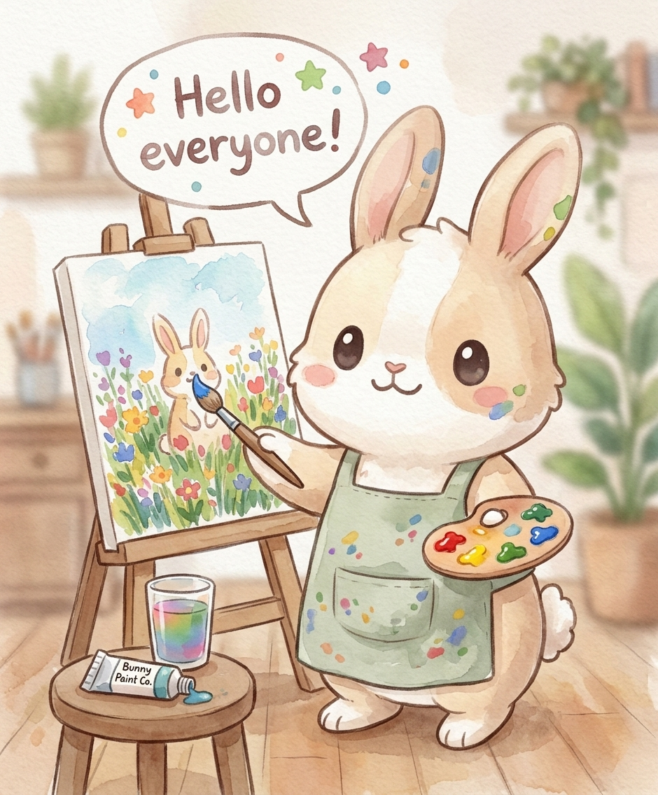
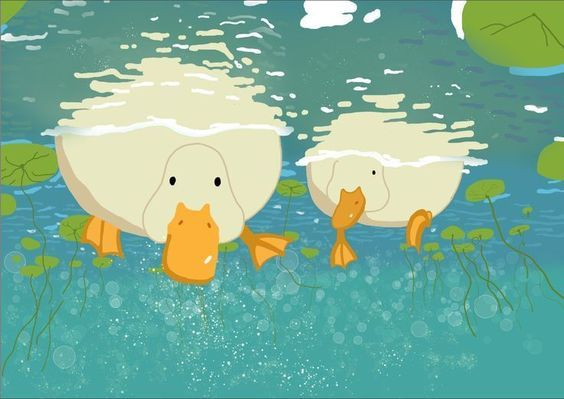
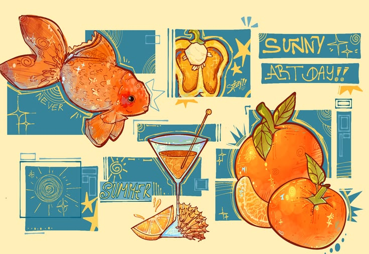
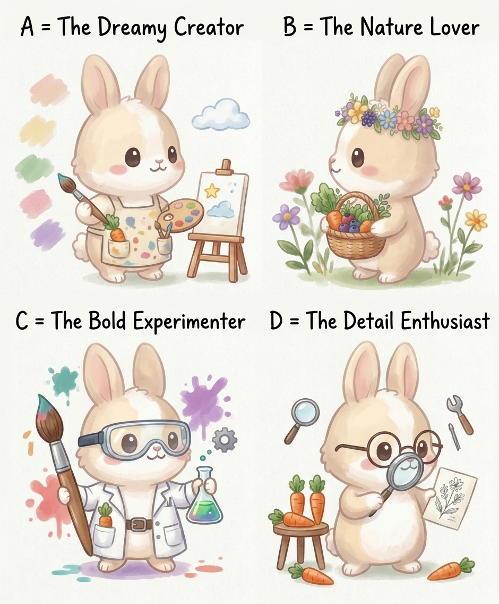
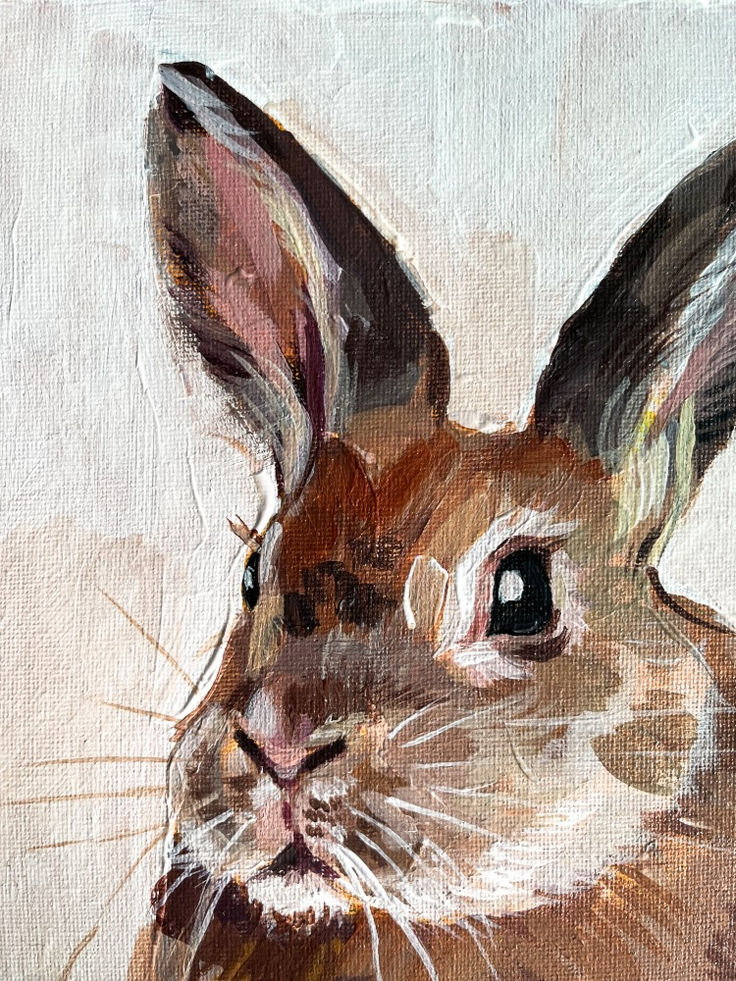

Hello, Little Artist!
Curious about art? Let's explore together!
Welcome to The Little Art Corner! Whether you're just starting your art journey or simply curious about painting, Lucy is here to guide you. Discover different painting mediums, explore creative ideas, and find your own way to express yourself.
Start ExploringDiscover the World of Art

Art is more than just creating beautiful pictures. It is a way for people to express their thoughts, feelings, and imagination.
Explore the World of ArtLet's Look at Art Differently

Every artwork has its own story, but everyone may see it differently. What do you think this artwork is expressing?
Discover MoreDiscover Your Artistic Side

Are you a nature lover, a dreamy creator, or a bold experimenter? Find out what kind of artistic style you might enjoy!
Take the QuizYour Little Art Challenge

Ready to turn your inspiration into creativity? Discover a little painting challenge and bring your imagination to life!
Try a Challenge